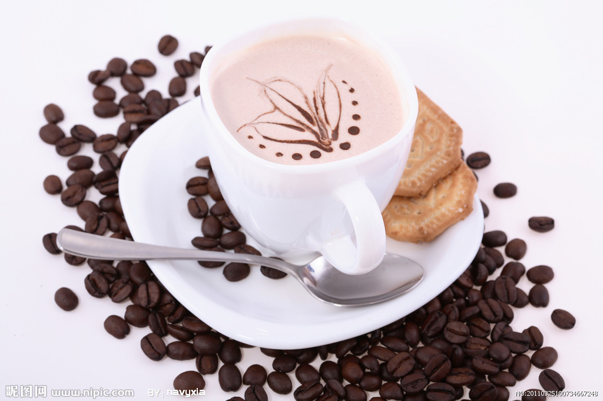

拿铁
"拿铁"是意大利文"Latte"的 音译，代表"牛奶"，拿铁咖啡(CoffeeLatte)是花式咖啡的一种，是咖啡与牛奶交融的极至之作。意式拿铁咖啡为纯牛奶加咖啡，美式拿铁则将部分牛奶替换成奶泡，本地的拿铁多为此种。 那句著名的"我不在咖啡馆，就在去咖啡馆的路上"是一位音乐家在维也纳说出来的。维也纳的空气里，永远都飘荡着音乐和拿铁(Latte)咖啡的味道。

卡布奇诺
卡布奇诺咖啡是意大利咖啡的一种变化，即在偏浓的咖啡上，倒入以蒸汽发泡的牛奶，此时咖啡的颜色就像卡布奇诺教会修士深褐色外衣上覆的头巾一样，咖啡因此得名。

奥瑞白
澳瑞白是一种起源于澳大利亚的，带有细奶泡的拿铁咖啡，并且在上个世纪八十年代就已经出现了，它是一款介于拿铁与卡布间的新饮品，而且在日常生活中也是非常受欢迎的

美式咖啡
美式咖啡（英文：Americano，意大利语：Caffè Americano）为咖啡的一种，是最普通的咖啡。它是使用滴滤式咖啡壶所制作出的黑咖啡，又或者是意式浓缩中加入热水制作而成。 其口味较淡，咖啡因含量较高

焦糖玛奇朵
焦糖玛琪朵（英语：Caramel Macchiato）是一种加入焦糖的玛琪雅朵咖啡。 在香浓热牛奶上加入浓缩咖啡、香草，最后淋上纯正焦糖而制成的饮品，其特点是在一杯饮品里可以喝到三种不同的口味。 Machiato在意大利文的意思是“烙印”，在奶泡上挤上网格图案，就像盖上了印章， 焦糖玛奇朵是加了焦糖的Machiato，代表“甜蜜的印记”，焦糖的香甜味道，奶泡的轻柔，中和了意式浓缩咖啡的苦味。
s